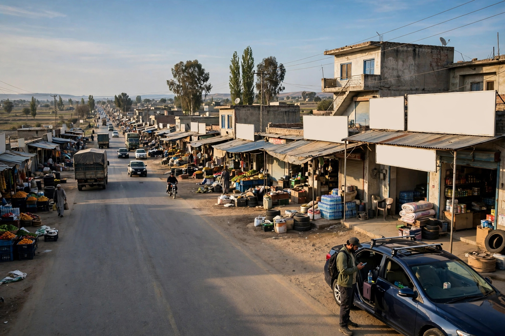
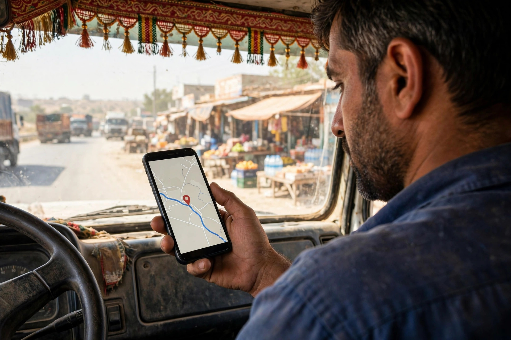
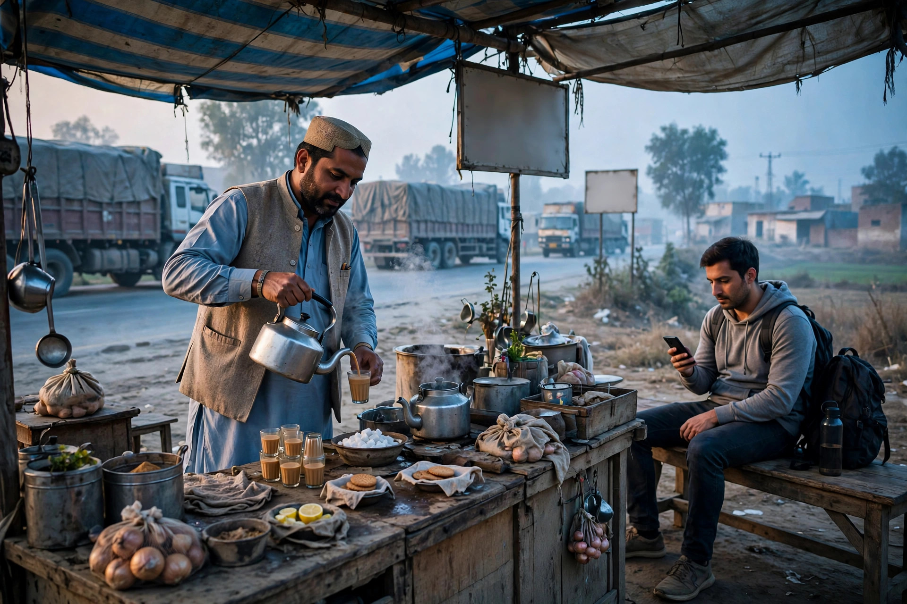

Chowk Azam sits on the busy Multan to Mianwali road, and its markets serve both local families and a steady flow of passing travellers. For a business here, Google Maps is often the first shop window a customer sees. If your business is not on the map, or its details are wrong, that customer simply goes to the next name on the list.
The good news is that appearing on Google Maps is free. It comes through a Google Business Profile, the listing that shows your name, phone number, hours, photos and reviews in search and maps results. This article walks through the whole process in simple language: claiming the listing, filling it correctly, keeping it accurate, and the small habits that help Chowk Azam businesses stand out. It also explains honestly where help is available, because Zaheer Seo Expert is based in Layyah and serves Chowk Azam businesses from there, with SEO work done online and by phone.
What a Google Maps Listing Actually Is
Many owners think Google Maps is only for big cities, but the map covers every town, and businesses appear on it because someone, either Google or the owner, added their details. When you search for a type of business near Chowk Azam, Google shows a map with pins and a short list of matching places. Each pin is a business profile. Tapping one shows the phone number, opening hours, photos, reviews and a directions button.
A profile you control is far better than one Google created on its own. An unclaimed listing may show an old phone number, wrong hours or no photos at all, and you cannot reply to reviews on it. Claiming the profile means proving to Google that the business is yours, after which you can correct every detail. For a fuller walkthrough of profile settings, our guide to Google Business Profile optimization covers the same ground in more depth.

Claiming and Verifying Your Chowk Azam Listing
Start by searching for your business name on Google Maps. If a listing already exists, choose the option that says you own or manage this business. Enter the name exactly as customers know it, without adding extra words like best or cheap, because Google can suspend listings that stuff keywords into the name field.
Google then asks for a category, an address and a phone number, and usually verifies the business by sending a code, often by a video check or a postcard in smaller towns. Follow the instructions patiently and enter the code as soon as it arrives. Once verified, your listing can appear in maps results. If the process feels confusing, this is exactly the kind of setup work covered by our SEO services in Chowk Azam, handled from our base in Layyah by phone and online.
Filling In Every Detail, Carefully
A complete profile gives customers fewer reasons to hesitate. Add your real opening hours, including any Friday break or seasonal change, because a traveller who arrives at a closed shutter rarely tries again. Choose the most accurate main category, such as motorcycle repair shop, grain dealer or general store, and add secondary categories only where they truly fit.
Photos matter more than many owners expect. Take clear pictures in daylight: the shop front with its board readable, the inside of the shop, your stock or machinery, and your team at work. A listing with real photos looks trustworthy next to one with none. Keep the phone number the same everywhere it appears online, since mismatched numbers confuse both customers and Google.
- Business name written exactly as on your shop board
- Correct main category and honest extra categories
- Real opening hours, updated on holidays and in Ramadan
- Clear photos of the shop front, stock and staff
- One consistent phone number used everywhere

Reviews, Questions and Keeping the Listing Alive
Reviews are the public proof that your shop treats people well. Ask satisfied customers, politely and in person, to leave a review, and make it easy by sharing your review link or a printed code at the counter. Reply to every review, thanking the writer and answering any complaint calmly.
Check the listing every few weeks. Answer questions people post on it, fix hours before holidays, and add a fresh photo now and then. A listing that changes occasionally signals an active business. Our earlier article on SEO for Chowk Azam businesses explains how this profile work fits with a website and other local signals.
Common Mistakes Chowk Azam Businesses Make
The most common mistake is creating the listing and forgetting it. Numbers change, shops move a few doors along the bazaar, and a partner leaves, yet the profile still shows the old details. Another frequent problem is having two listings for the same shop, which splits reviews between them and confuses the map. If a duplicate exists, ask Google to merge it rather than leaving both.
Some owners also pin their location carelessly, dropping the marker in the middle of the road or in the wrong street. Take ten minutes to drag the pin to the right building and check it in satellite view.

Getting Help From Layyah, Without the Travel
Everything described here can be done by the business owner, free of charge, with a smartphone and some patience. What many traders lack is not ability but time during a busy market day. That is where outside help is useful. Zaheer Seo Expert is based in Layyah, on Rajan Shah Road, and has no office in Chowk Azam. All work for Chowk Azam clients is done online and by phone, which suits SEO perfectly because profiles, websites and search results are all managed over the internet anyway.
If you would like your profile claimed, completed and kept in order, or you want honest advice about what your business actually needs, call or email and ask. You will get a plain assessment first, not a sales script, and you can decide from there.
Frequently Asked Questions
Does it cost money to appear on Google Maps?
No. A Google Business Profile is free, and claiming or creating one costs nothing. You only pay if you choose to hire someone to set it up and manage it for you, or if you later decide to run paid advertising, which is separate.
My shop already shows on the map but the number is wrong. What should I do?
Claim the listing first, complete Google verification, and then edit the phone number and any other wrong details. Changes sometimes take a short review by Google before they show publicly, so check again after a day or two.
Can a business without a shop front be listed?
Often yes. Businesses that visit customers, such as repair services, can register as service-area businesses and hide their exact address while still appearing for searches in the towns they serve. The category and service area must be set honestly.
Do I need an office visit to get SEO help for my Chowk Azam business?
No. Zaheer Seo Expert is based in Layyah and serves Chowk Azam entirely online and by phone. Profiles, websites and reports are all handled over the internet, and progress can be discussed on a simple call whenever it suits you.
Want More Customers From Google?
Call 0327 7350830 or email seozaheer14@gmail.com. Zaheer Seo Expert, Layyah - Rajan Shah Road, Rana Nagar, Chak 116 TDA, Pakistan. Open 24 hours.
Get Your SEO Strategy →